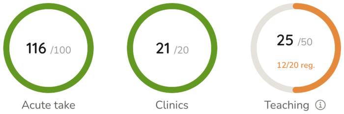
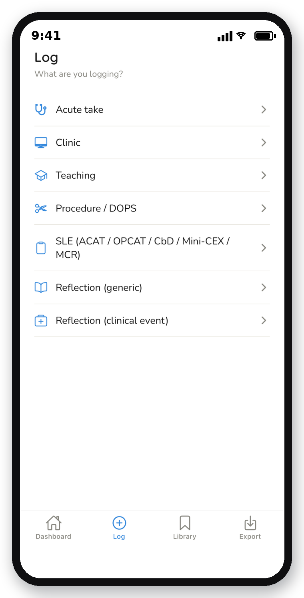
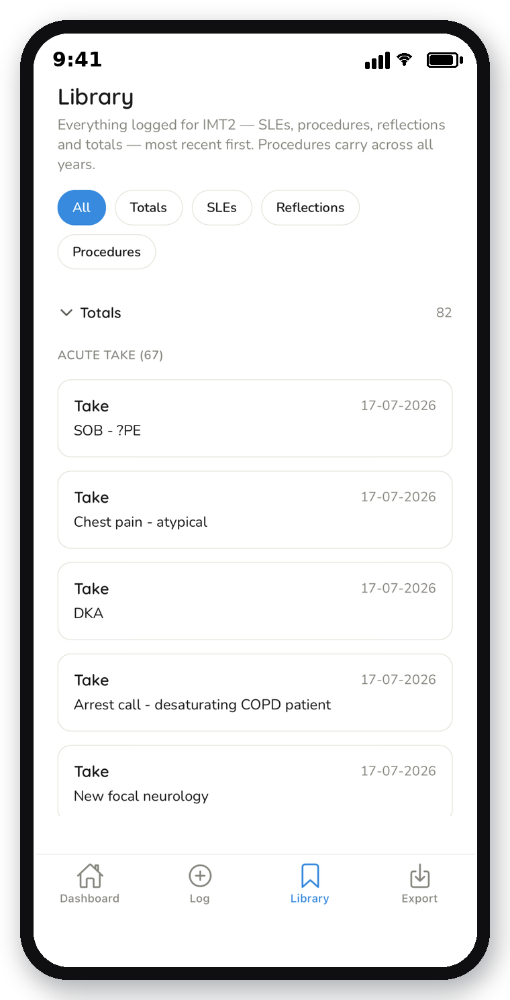
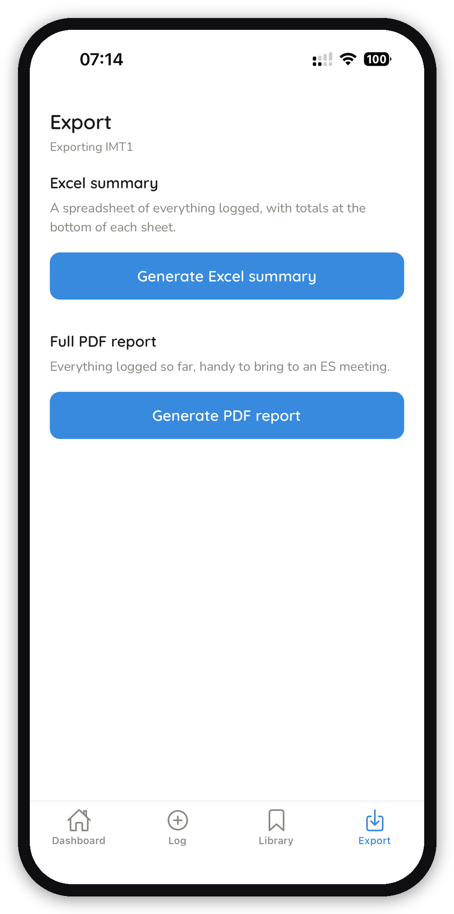

ARCP Aid turns the JRCPTB Decision Aid, Stage 1 Guidance and yearly checklists into a live dashboard — so trainees always know where they stand.
See the pilot and evidence base below, or go straight to the Privacy Policy & Terms.

It's hard to know if you're on track with your take, clinic and teaching numbers, or what's left to do.
The Decision Aid, the Stage 1 Guidance, the yearly checklists — all separate PDFs that change over time. Easy to miss an update.
Trainees often don't spot a portfolio gap until ARCP is close — exactly the wrong time to find out, with no time left to fix it.
Four things, all built directly from the primary source documents and kept current as they change.
Rings that update in real time against IMT1, IMT2 and IMT3 targets, as soon as something is logged.
SLEs and reflections captured in minutes, in the exact format needed for the portfolio, with AI support to help write them up.
Built directly from the ARCP Decision Aid and Stage 1 Guidance, and kept current as those documents change.
Excel and PDF summaries generated straight from logged data, ready for an ES meeting or your personal library.



Every requirement in the app is fact-checked directly against the JRCPTB IMT ARCP Decision Aid, the Stage 1 ARCP Guidance, and the official IMT1–3 checklists — and rechecked whenever national guidance changes.
"ARCP Aid offers a really user friendly experience and well presented way of tracking my portfolio requirements, I particularly liked the procedures and checklist tabs which give me an instant snapshot of the required level for my grade and my progress in relation to this."
Dr Michael
IMT2, North West London trainee
"I love how quickly I can log my take patients during a shift — it takes seconds, and the same goes for clinics and teaching, so I'm always on top of it as I go. My favourite feature is the one-tap export, which pulls everything into a clean summary ready to drop straight into my ePortfolio's personal library — it's going to save me so much time in the long run."
Dr Christine
IMT2, North West London trainee